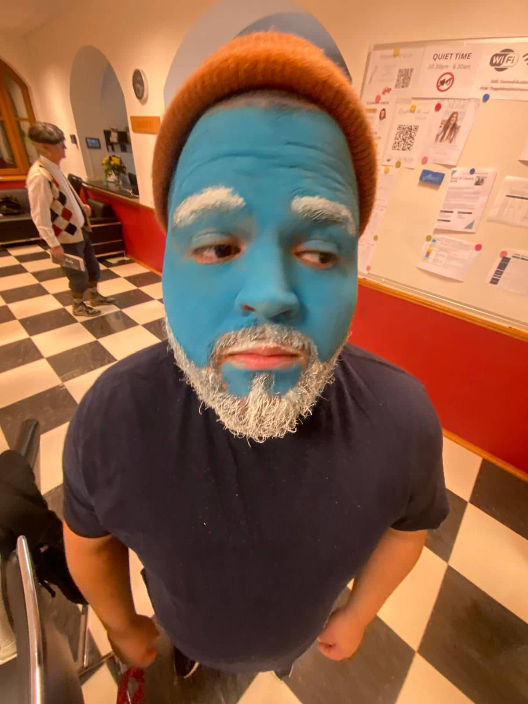

About Me

My name is Eryck Lima. I was born in Brazil. I am at Cumorah Academy! Here we learn about leadership and how to impact the world. My house is Esther!
São Paulo, Brazil
Brazil, officially the Federative Republic of Brazil, is the largest and easternmost country in South America and Latin America. It is the world's fifth-largest country by area and the seventh most populous. Its capital is Brasília, and its most populous city is São Paulo. Brazil is a federation composed of 26 states and a Federal District. It is the only country in the Americas where Portuguese is an official language.